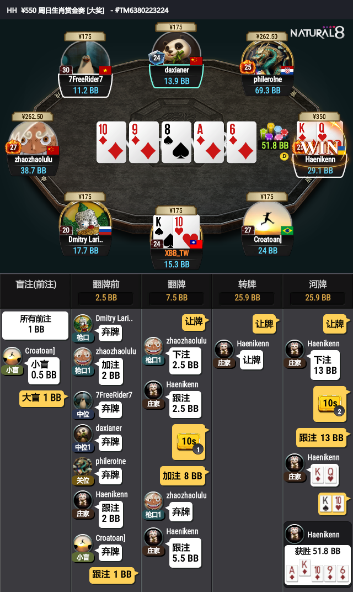
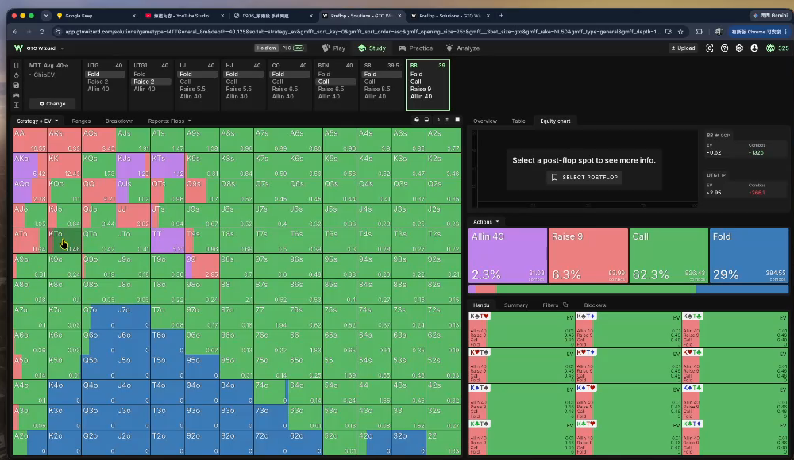
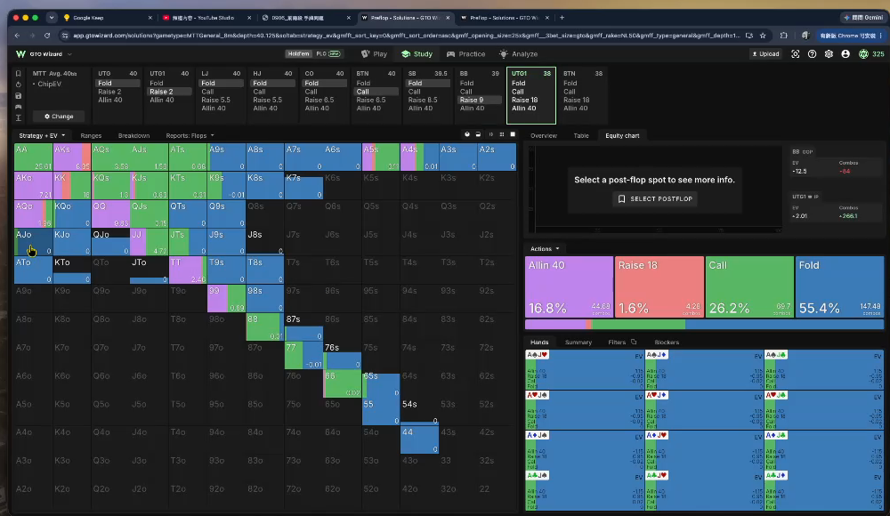
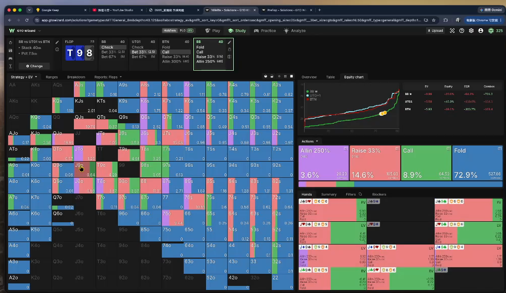
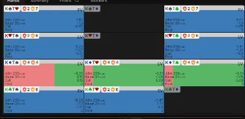
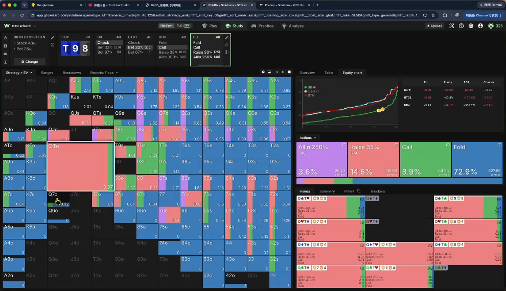
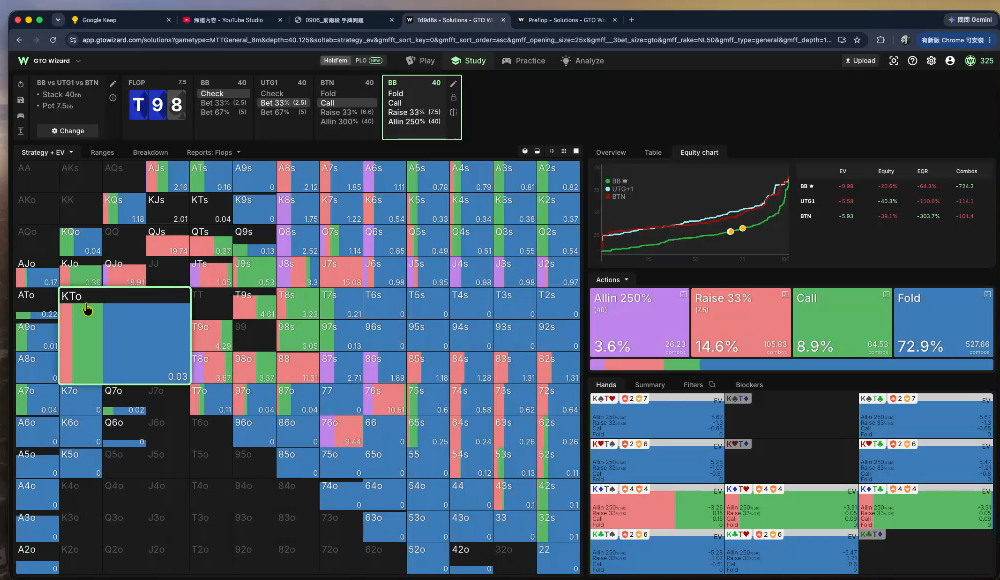
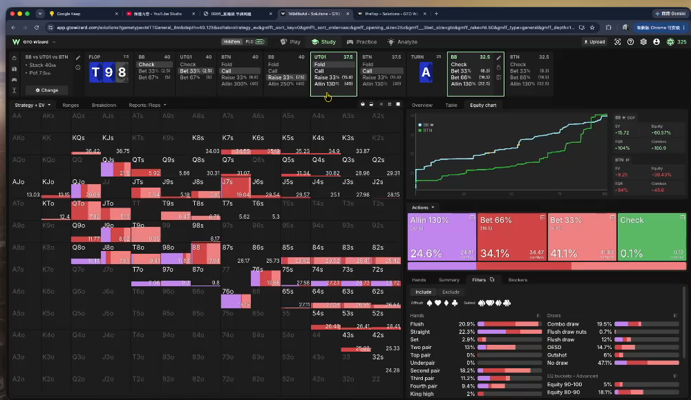

多人池 · 濕牌面 · 頂對
多人池拿頂對 KT，該不該 check-raise？
翻牌
T♦9♦8♠
我在大盲K♠T♥
先看完整牌局，再用 GTO 依序看翻前、翻牌、轉牌。
更多撲克策略：YT 搜尋「XBB poker」更多學習簡報：IG 搜尋「@xbbtw」
多人池 · 濕牌面 · 頂對
先看完整牌局，再用 GTO 依序看翻前、翻牌、轉牌。
更多撲克策略：YT 搜尋「XBB poker」更多學習簡報：IG 搜尋「@xbbtw」
先看這手牌

更多撲克策略：YT 搜尋「XBB poker」更多學習簡報：IG 搜尋「@xbbtw」
GTO · 翻前
可以混一部分。我這手 KTo 以跟注為主；比它強一級的 KJo 才混一段 3B。
GTO Wizard MTT 40BB 模型（實戰約 38BB）
為什麼要 3B？以 KJo 為例：為了讓前位 fold 掉 AJo 這類牌。
如果不 3B，三人一起看翻牌，萬一一起中 J，對手是頂對、踢腳又比你大，「你至少會不死也半殘」。


我這手 KTo：第一張圖游標停的那格就是 KTo，幾乎都是綠色（跟注）。翻前跟注沒有問題，這手的問題在翻牌。
更多撲克策略：YT 搜尋「XBB poker」更多學習簡報：IG 搜尋「@xbbtw」
GTO · 翻牌 · 整個範圍
會，約 18%（加注 14.6%＋全下 3.6%）。
拿什麼 squeeze？從強的開始算：
① 順子：QJ、J7、76 ② 兩對 ③ set ④ 帶方塊或帶順的聽牌
多人池想繼續，要的是 equity：牌現在夠強，或後面有很多牌能讓它變強。

更多撲克策略：YT 搜尋「XBB poker」更多學習簡報：IG 搜尋「@xbbtw」
GTO · 翻牌 · 我這一手
整個範圍會 squeeze 約 18%，但我這手不帶方塊的 K♠T♥，GTO 是 100% fold；只有帶 K♦ 的 KT 才會 call 或 raise。

為什麼頂對要丟？
① KT 幾乎是所有 T 裡最爛的：同樣是頂對，JT 還有兩頭順、QT 還有卡順，KT 什麼聽牌都沒有。
② 不帶方塊：多人池要的是 equity。K♦T 還有後門的大花可以聽，K♠T♥ 連這個也沒有。
③ 看起來是頂對，但後面開 A、開方塊、開 7、開 J，它都會變成只能抓詐的牌；而且我們沒有位置。
對照 QT XBB 原話：「如果是 QT，我們就直接 raise。」
GTO 圖上：QTo 約 9 成加注，只剩少量跟注、棄牌；QTs 約 6 成加注、4 成跟注。QT 至少擋到這個牌面的 nuts（QJ），還有卡順。


更多撲克策略：YT 搜尋「XBB poker」更多學習簡報：IG 搜尋「@xbbtw」
GTO · 轉牌 A♦
前提：翻牌我們加注、Button 跟注；轉牌兩人底池，我們先行動。

為什麼？翻牌會 squeeze 的牌裡有大量方塊聽牌，A♦ 一來，帶兩張方塊的都成花，再加上原本的順子，範圍裡強牌很多。我們沒有 A，可是我們有花，花比 A 強。
這也解釋了上一頁：要繼續就帶方塊。如果剛剛是 K♦T，轉牌就能繼續下注；沒方塊的 K♠T♥ 就很尷尬。
更多撲克策略：YT 搜尋「XBB poker」更多學習簡報：IG 搜尋「@xbbtw」
Take away
適用範圍：這是 40BB、三人池、T♦9♦8♠ 這個牌面的 GTO 解。換了牌面或人數，要重新看。
更多撲克策略：YT 搜尋「XBB poker」更多學習簡報：IG 搜尋「@xbbtw」